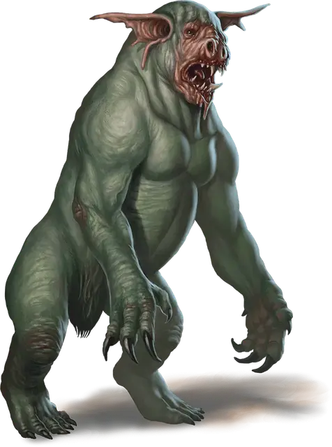

Дретч
Dretch
Маленькое Исчадие (Демон), хаотично-злое

Класс Доспеха 11 (природный доспех)
Хиты 18 (4к6 + 4)
Скорость 20 футов
| мод | спас | ||
|---|---|---|---|
| СИЛ | 11 | +0 | +0 |
| ЛОВ | 11 | +0 | +0 |
| ТЕЛ | 12 | +1 | +1 |
| мод | спас | ||
|---|---|---|---|
| ИНТ | 5 | −3 | −3 |
| МДР | 8 | −1 | −1 |
| ХАР | 3 | −4 | −4 |
Сопротивление урону огонь, холод, электричество
Иммунитет к урону яд
Иммунитет к состояниям отравление
Чувства тёмное зрение 60 футов, пассивное Восприятие 9
Языки Бездны, Телепатия 60 фт. (работает только с существами, понимающими язык Бездны)
Опасность 1/4 (50 опыта)
Бонус мастерства +2
Действия
Мультиатака. Дретч совершает две атаки: одну укусом, и одну когтями.
Укус. Рукопашная атака оружием: +2 к попаданию, досягаемость 5 футов, одна цель. Попадание: Колющий урон 3 (1к6).
Когти. Рукопашная атака оружием: +2 к попаданию, досягаемость 5 футов, одна цель. Попадание: Рубящий урон 5 (2к4).
Зловонное облако (1/день). От дретча исходит облако отвратительного зеленого газа с радиусом 10 футов. Этот газ огибает углы, и его пространство является слабо заслонённой местностью. Облако существует 1 минуту, или пока сильный ветер его не развеет. Все существа, начинающие ход в этой области, должны преуспеть в спасброске Телосложения Сл 11, иначе станут отравленными до начала своего следующего хода. Будучи отравленной таким образом, цель может в свой ход совершать либо действие, либо бонусное действие, но не то и другое, и не может совершать реакции.
Описание
Дретчи, одни из самых слабых демонов, — отталкивающие, поглощенные ненавистью к себе существа, обреченные на вечность разочарования. Низкий интеллект позволяет дретчам выполнять только самые простые задачи. Однако нехватку потенциала они компенсируют злобой. Дретчи сбиваются в толпу, выражая свое недовольство тревожным галдежом и ворчанием.
См. дополнительно статью: "Бестиарий: Демоны"